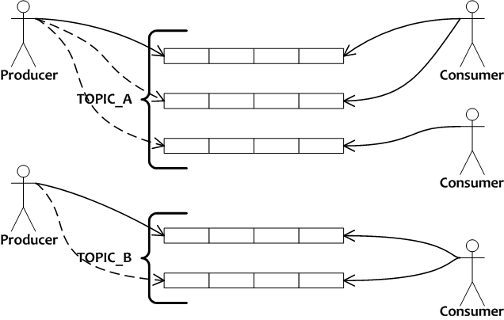

|
METAQ是一款完全的队列模型消息中间件，服务器使用Java语言编写，可在多种软硬件平台上部署。客户端支持Java、C++编程语言。单台服务器可支持1万以上个消息队列，通过扩容服务器，队列数几乎可任意横向扩展。每个队列都是持久化、长度无限（取决于磁盘空间大小）、并且可从队列任意位置开始消费。

METAQ在阿里巴巴各个子公司被广泛应用，每天转发250亿+条消息。主要应用于异步解耦，Mysql数据复制，收集日志等场景。下面是使用METAQ的各个公司或项目名，阿里以外的公司通过与开发者交流得知，如有误请告知我们。如果您正在使用METAQ，也请告知。
|